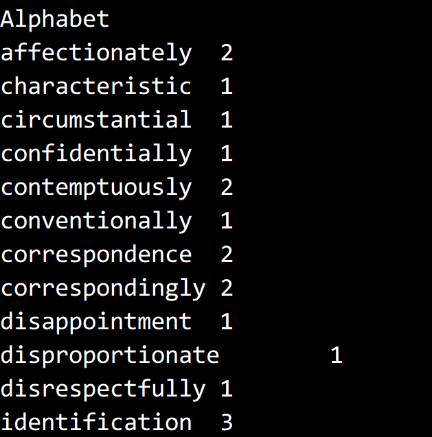
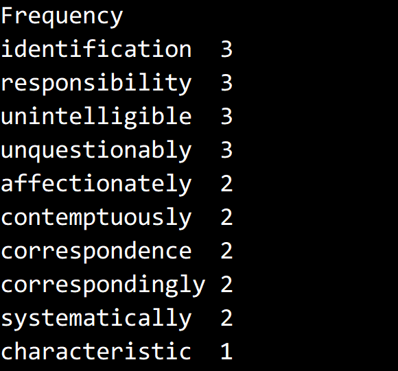

© 2019 《算法（第四版）》C# 题解 | Provided By 沈星繁
搜索解答
目前已完成到 2.5
3.1.26
上次更新：2019-03-03 发现了题解错误/代码缺陷/排版问题？请点这里：如何：提交反馈 。
题目
3.1.26
基于字典的频率统计。
修改 FrequencyCounter，接受一个字典文件作为参数，
统计标准输入中出现在字典中的单词的频率，并将单词和频率打印为两张表格，
一张按照频率高低排序，一张按照字典顺序排序。
解答
字典文件：https://introcs.cs.princeton.edu/java/data/web2.txt
《双城记》：https://introcs.cs.princeton.edu/java/data/tale.txt
浏览器可能会直接打开 txt，此时右键链接-目标另存为即可下载。
FrequencyCounter 的官方实现：https://algs4.cs.princeton.edu/31elementary/FrequencyCounter.java.html
我们利用 BinarySearchST 会自动对键排序的性质来实现字典序排序。
首先将字典存到一个符号表中，按照 “单词-序号” 的形式保存。
然后读入文件，如果读入的单词存在于字典中，
则将其以 “序号-单词” 的形式存到 BinarySearchST 中去。
读入完毕后，遍历 BinarySearchST 即可获得字典序的单词列表。
对于按频率排序，我们基于已有的实现修改。
在每次取得最大值之后，输出并删除最大值，如此循环即可获得频率排序的单词序列。
也可以将单词-频率序列全部读出来存放到数组之中，然后用第二章的排序算法排序。
测试结果，取 minLength = 13，只截取了部分。


代码
public static void LookUpDictionary(string filename, string dictionaryFile, int minLength)
{
// 初始化字典
StreamReader sr = new StreamReader(File.OpenRead(dictionaryFile));
string[] words = sr.ReadToEnd().Split(new char[] { ' ', '\r', '\n' }, StringSplitOptions.RemoveEmptyEntries);
BinarySearchST<string, int> dictionary = new BinarySearchST<string, int>();
for (int i = 0; i < words.Length; i++)
{
if (words[i].Length > minLength)
dictionary.Put(words[i], i);
}
sr.Close();
// 读入单词
StreamReader srFile = new StreamReader(File.OpenRead(filename));
string[] inputs = srFile.ReadToEnd().Split(new char[] { ' ', '\r', '\n' }, StringSplitOptions.RemoveEmptyEntries);
srFile.Close();
BinarySearchST<int, string> stDictionary = new BinarySearchST<int, string>();
BinarySearchST<string, int> stFrequency = new BinarySearchST<string, int>();
foreach (string s in inputs)
{
if (stFrequency.Contains(s))
stFrequency.Put(s, stFrequency.Get(s) + 1);
else if (dictionary.Contains(s))
{
stFrequency.Put(s, 1);
stDictionary.Put(dictionary.Get(s), s);
}
}
// 输出字典序
Console.WriteLine("Alphabet");
foreach (int i in stDictionary.Keys())
{
string s = stDictionary.Get(i);
Console.WriteLine(s + "\t" + stFrequency.Get(s));
}
// 频率序
Console.WriteLine("Frequency");
int n = stFrequency.Size();
for (int i = 0; i < n; i++)
{
string max = "";
stFrequency.Put(max, 0);
foreach (string s in stFrequency.Keys())
if (stFrequency.Get(s) > stFrequency.Get(max))
max = s;
Console.WriteLine(max + "\t" + stFrequency.Get(max));
stFrequency.Delete(max);
}
}